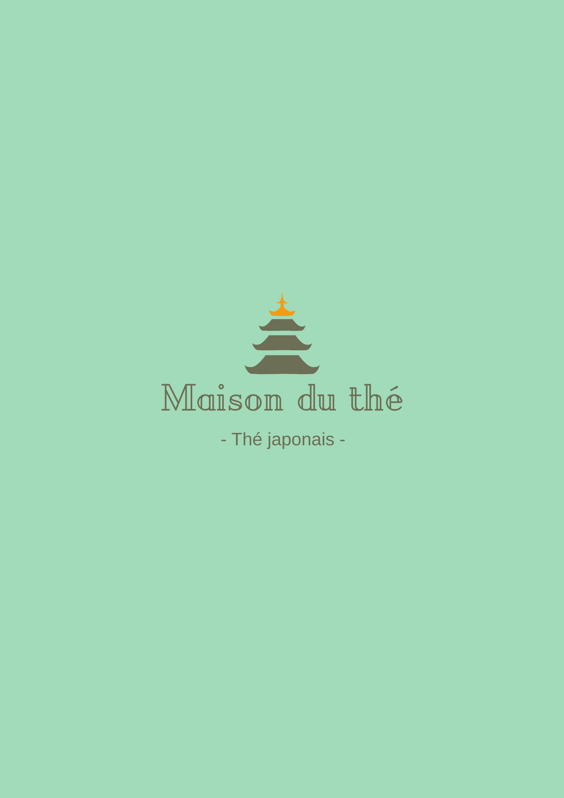
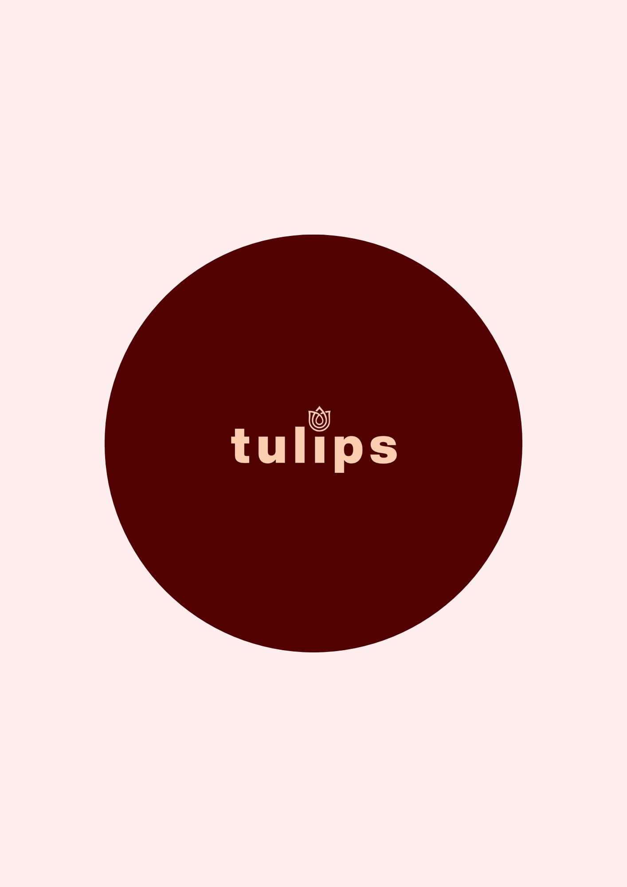
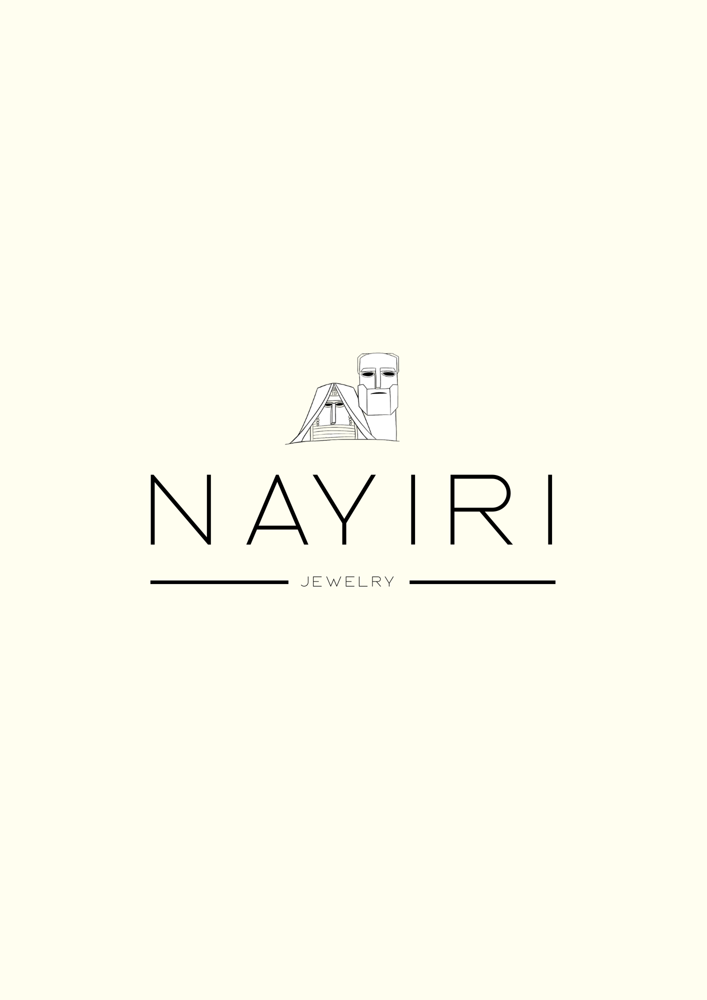

Mes logos
Logos

Logo — Catbucks Coffee

Logo — Maison du thé

Logo — Tulips

Logo — Ethnos

Logo — Nayiri
Création autonome de logos sur Canva pour des projets variés : marques de thé,de café ainsi que différentes marques arméniennes, avec une approche créative adaptée à chaque identité visuelle.